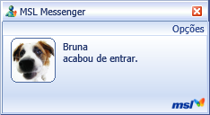
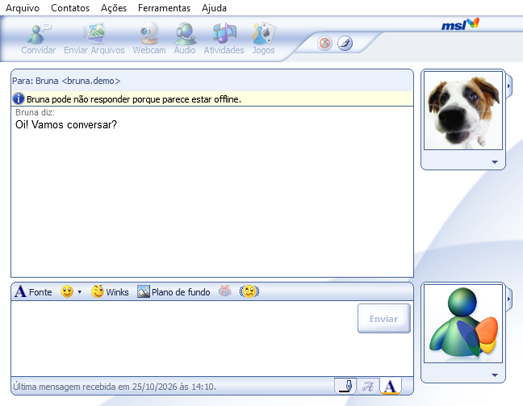
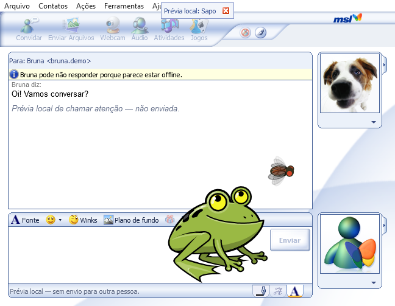
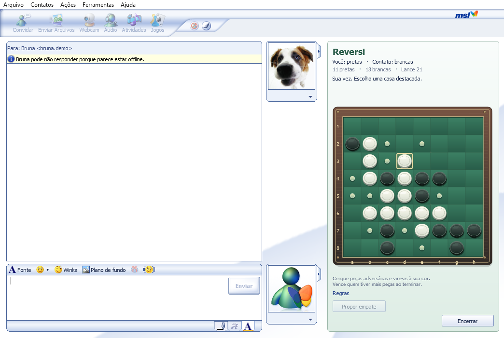
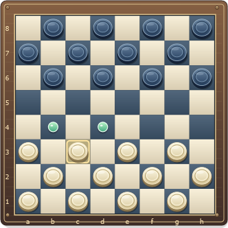
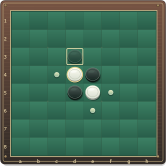

Conversas com personalidade
Mensagens pessoais, emoticons, desenhos, winks e nudges. Porque nem tudo precisa ser só texto.
Messenger Second Life · Para Windows
O frio na barriga de uma janelinha piscando. Os emoticons, os winks, aquela vontade de chamar atenção. O clima do MSN clássico, agora com seus amigos do Second Life.
Dê uma espiadaEm desenvolvimento · Download ainda não disponível
Lembra dessa notificação?
“Bruna acabou de entrar.”


O MSL recria a experiência do MSN Messenger 7.0 em um mensageiro conectado ao Second Life. Seu username e display name, seus contatos e suas conversas, em um visual que traz muita memória boa.
Mensagens pessoais, emoticons, desenhos, winks e nudges. Porque nem tudo precisa ser só texto.
Chat público, minimapa, avatares próximos e o áudio da land em um só lugar.
Envio de arquivos, chamadas de voz e compartilhamento de tela entre amigos.
Veja o aplicativo de perto.
Clique nos prints para ampliar.

Um toque de exageroWinks e nudges para quem sente falta dessa bagunça. ↗
“Só mais uma partida”Jogue e converse com o amigo na mesma janela. ↗Telas reais da versão em desenvolvimento. Nomes e mensagens de demonstração; o visual ainda pode receber ajustes antes do lançamento.
Três jogos para desafiar os amigos pelo MSL.
Sem sair da janela de conversa.

Capture, promova e planeje o próximo lance.

Uma jogada pode virar a partida.
O clássico que sempre pede uma revanche.
O MSL terá um espaço para acompanhar suas partidas e seus resultados. O histórico e a classificação local já fazem parte do desenvolvimento.
O ranking global está em preparação. Quando estiver disponível, você poderá acompanhar os resultados da comunidade por aqui.
A classificação pública ainda não foi ativada.
Não há partidas publicadas neste site.
Estamos preparando o MSL para encontrar os seus amigos.
O download será liberado aqui quando estiver pronto.